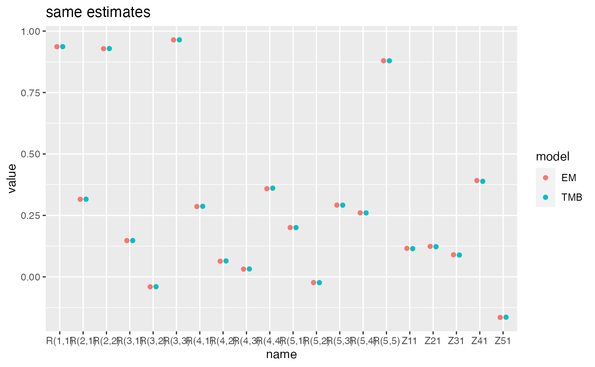
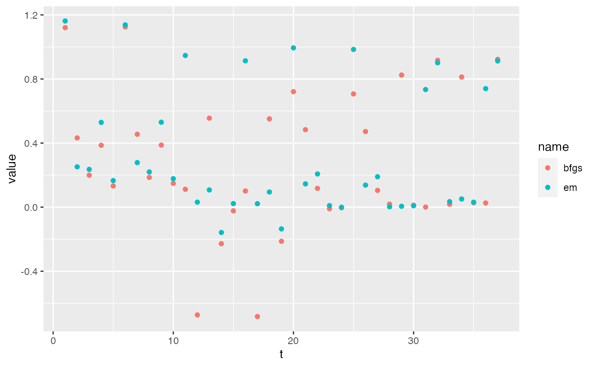

dfaTMB() will be replaced with
MARSS_tmb()
The dfaTMB() function allows you to fit DFAs with the
same form as MARSS(x, form="dfa"). This has a diagonal
\(\mathbf{Q}\) with 1 on the diagonal
and a stochastic \(\mathbf{x}_1\) with
mean 0 and variance of 5 (diagonal variance-covariance matrix). There
are only 3 options allowed for \(\mathbf{R}\): diagonal and equal, diagonal
and unequal, and unconstrained.
Example data
library(MARSS)
data(lakeWAplankton, package = "MARSS")
phytoplankton <- c("Cryptomonas", "Diatoms", "Greens", "Unicells", "Other.algae")
dat <- as.data.frame(lakeWAplanktonTrans) |>
subset(Year >= 1980 & Year <= 1989) |>
subset(select=phytoplankton) |>
t() |>
MARSS::zscore()Fit with MARSS
m1.em <- MARSS(dat, model=list(R='unconstrained', m=1, tinitx=1), form='dfa', z.score=FALSE, silent = TRUE)Fit with TMB. Note the syntax will be updated to match MARSS().
Compare parameter estimates
library(tidyr)
pars <- data.frame(name = c(paste0("R", rownames(coefficients(m1.em)$R)),
paste0("Z", rownames(coefficients(m1.em)$Z))),
EM = c(coefficients(m1.em)$R, coefficients(m1.em)$Z),
TMB = c(as.vector(m1.tmb$Estimates$R[lower.tri(m1.tmb$Estimates$R,diag=TRUE)]),
as.vector(m1.tmb$Estimates$Z)))
pars <- pars %>% tidyr::pivot_longer(2:3, names_to = "model")
library(ggplot2)
dodge <- position_dodge(width=0.5)
ggplot(pars, aes(x=name, y=value, col=model)) +
geom_point(position=dodge) +
ggtitle("same estimates")
Compare two states models.
m1.bfgs <- MARSS(dat, model=list(R='unconstrained', m=2, tinitx=1), form='dfa', z.score=FALSE, silent = TRUE,
method="BFGS")
m1.tmb <- dfaTMB(dat, model=list(m=2, R='unconstrained'))
c(m1.bfgs$logLik, m1.tmb$logLik)
#> [1] -765.8454 -765.8454
Compare two states models with R diagonal and equal
mod.list <- list(R='diagonal and equal', m=2, tinitx=1)
m1.bfgs <- MARSS(dat, model=mod.list, form='dfa', z.score=FALSE, silent = TRUE,
method="BFGS")
m1.tmb <- dfaTMB(dat, model=mod.list)
c(m1.bfgs$logLik, m1.tmb$logLik)
#> [1] -798.3209 -798.3209Include a comparison with covariates
data(lakeWAplankton, package = "MARSS")
phytoplankton <- c("Cryptomonas", "Diatoms", "Greens", "Unicells", "Other.algae")
dat <- as.data.frame(lakeWAplanktonTrans) |>
subset(Year >= 1980 & Year <= 1989) |>
subset(select=phytoplankton) |>
t() |>
MARSS::zscore()
# add a temperature covariate
temp <- as.data.frame(lakeWAplanktonTrans) |>
subset(Year >= 1980 & Year <= 1989) |>
subset(select=Temp)
covar <- t(temp)
m_cov_tmb <- dfaTMB(dat, model=list(m=1, R='diagonal and unequal'),
EstCovar = TRUE, Covars = covar)
m_cov_tmb$Estimates$D
#> [,1]
#> [1,] 0.05906647
#> [2,] -0.27764610
#> [3,] 0.50726835
#> [4,] 0.13172004
#> [5,] 0.53792693
# add a 2nd covariate
TP <- as.data.frame(lakeWAplanktonTrans) |>
subset(Year >= 1980 & Year <= 1989) |>
subset(select=TP)
covar <- rbind(covar, t(TP))
m_cov2_tmb <- dfaTMB(dat, model=list(m=1, R='diagonal and unequal'),
EstCovar = TRUE, Covars = covar)
m_cov2_tmb$Estimates$D
#> [,1] [,2]
#> [1,] 0.01241099 -0.27750487
#> [2,] -0.32294643 -0.26915892
#> [3,] 0.49174949 -0.09746135
#> [4,] 0.10052332 -0.19418803
#> [5,] 0.53275591 -0.02629113Look at a bigger data set
Compare three states models with R diagonal and unequal and 12 time series. The EM algorithm and TMB algorithms struggles to converge with DFA models. This is specific to this set of time series.
dat2 <- rbind(dat, dat+matrix(rnorm(nrow(dat)*ncol(dat),0,0.2), nrow(dat), ncol(dat)))
dat2 <- MARSS::zscore(dat2)
mod.list <- list(R='diagonal and unequal', m=3, tinitx=1)
# Control set to match setting in MARSS.tmp()
t1.bfgs <- system.time(m1.bfgs <- MARSS(dat2,
model=mod.list, form='dfa',
z.score=FALSE, silent = TRUE, method="BFGS",
control = list(reltol = 1e-12, maxit=2000)))[1]
t1.em <- system.time(m1.em <- MARSS(dat2, model=mod.list, form='dfa', z.score=FALSE, silent = TRUE))[1]
t1.tmb <- system.time(m1.tmb <- dfaTMB(dat2, model=mod.list))[1]
t1.tmb2 <- system.time(m1.tmb2 <- dfaTMB(dat2, model=mod.list, fun.opt="optim"))[1]TMB + nlminb() is much faster. But at the default convergence settings, the Kalman-Filter + BFGS ran longer and got to a higher maximum likelihood. This seems to be an issue with TMB for both the optimizers. Also the speed savings seems to be due to nlminb() not TMB per se.
# Log-likelihood
c(em=m1.em$logLik, kfoptim=m1.bfgs$logLik, TMBnlminb=m1.tmb$logLik, TMBoptim=m1.tmb2$logLik)
#> em kfoptim TMBnlminb TMBoptim
#> -1096.381 -1036.093 -1096.186 -1269.752
# Time
c(em=t1.em, kfoptim=t1.bfgs, TMBnlminb=t1.tmb, TMBoptim=t1.tmb2)
#> em.user.self kfoptim.user.self TMBnlminb.user.self TMBoptim.user.self
#> 8.726 24.792 2.062 7.966It might be an odd initial condition issue as if BFGS is started with
EM, it does not find the lower log-likelihood but ends up at the higher
value that EM and TMB found. Note, this varies a bit. This is for
set.seed(1234).
m1 <- MARSS(dat2, model=mod.list, form='dfa', z.score=FALSE, silent = TRUE, control = list(minit=1, maxit=10))
t2.bfgs <- system.time(m2.bfgs <- MARSS(dat2, model=mod.list, form='dfa', z.score=FALSE, silent = TRUE, method="BFGS", inits = m1))[1]
c(t2.bfgs, m2.bfgs$logLik)
#> user.self
#> 5.682 -1096.186
library(broom)
df <- data.frame(t=1:37, bfgs=tidy(m1.bfgs)$estimate, em=tidy(m1.em)$estimate) |>
pivot_longer(2:3)
ggplot(df, aes(x=t, y=value, col=name)) + geom_point()